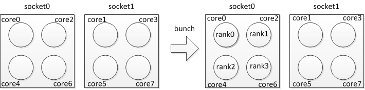
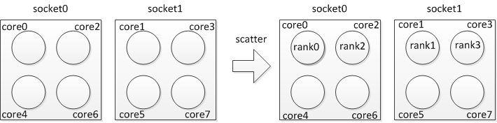
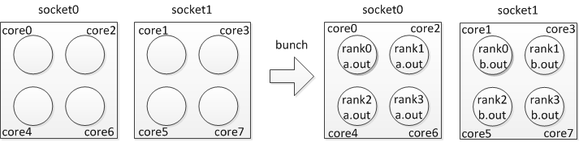
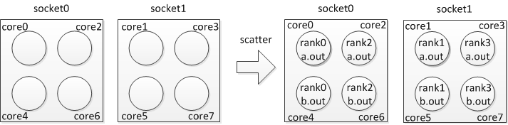
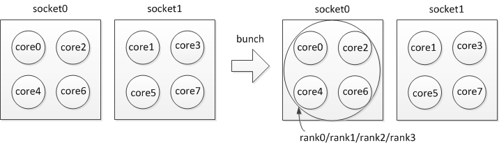
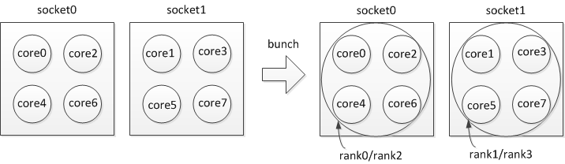
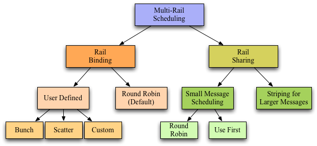
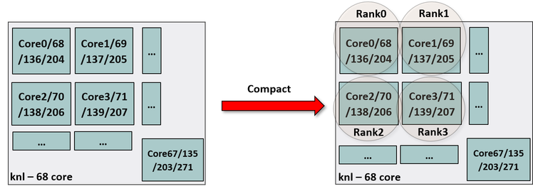
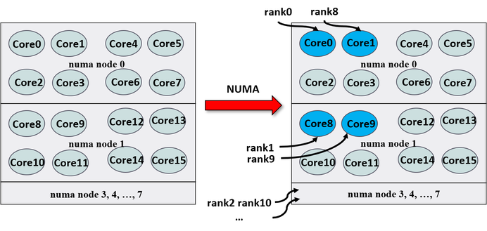

Basic Usage Instructions
Compile Applications
MVAPICH2 provides a variety of MPI compilers to support applications
written in different programming languages. Please use
mpicc, mpif77, mpiCC, or mpif90 to compile applications. The correct
compiler should be selected depending upon the programming language of
your MPI application.
These compilers are available in the MVAPICH2_HOME/bin directory.
MVAPICH2 installation directory can also be specified by modifying
$PREFIX, then all the above compilers will also be present in the
$PREFIX/bin directory.
Run Applications
This section provides instructions on how to run applications with MVAPICH2. Please note that on new multi-core architectures, process-to-core placement has an impact on performance. Please refer to Section 2.5 to learn about running MVAPICH2 library on multi-core nodes.
Run using mpirun_rsh
The MVAPICH team suggests users using this mode of job start-up for all
interfaces (including OFA-IB-CH3, OFA-IB-Nemesis, OFA-iWARP-CH3,
OFA-RoCE-CH3, TrueScale (PSM-CH3), Omni-Path (PSM2-CH3), Shared
memory-CH3, TCP/IP-CH3 and TCP/IP-Nemesis) This mpirun_rsh scheme
provides fast and scalable job start-up. It scales to multi-thousand
node clusters.
Prerequisites:
-
Either
sshorrshshould be enabled between the front nodes and the computing nodes. In addition to this setup, you should be able to login to the remote nodes without any password prompts. -
Alternatively, if the SLRUM resource manager is in use,
mpirun_rshcan use the–launcher srunoption to use SLRUM daemons to launch. -
All host names should resolve to the same IP address on all machines. For instance, if a machine's host names resolves to 127.0.0.1 due to the default /etc/hosts on some Linux distributions it leads to incorrect behavior of the library.
Examples of running programs using mpirun_rsh:
This command launches cpi on nodes n0 and n1, two processes per node.
By default ssh is used.
This command launches cpi on nodes n0 and n1, two processes per each
node using rsh instead of ssh.
This command launches cpi on nodes n0 and n1, two processes per each
node using srun instead of ssh. This is usefull on clusters that do
not support direct ssh access to compute nodes.
MPIRUN_RSH Hostfile:
A list of target nodes may be provided in the file hosts one per line.
MPI ranks are assigned in order of the hosts listed in the hosts file or
in the order they are passed to mpirun_rsh. i.e., if the nodes are
listed as n0 n1 n0 n1, then n0 will have two processes, rank 0 and rank
2; whereas n1 will have rank 1 and 3. This rank distribution is known as
"cyclic\". If the nodes are listed as n0 n0 n1 n1, then n0 will have
ranks 0 and 1; whereas n1 will have ranks 2 and 3. This rank
distribution is known as "block\". A cyclic (one entry per host)
hostfile can be modified with the ppn launch option to use a block
distribution.
Hostfile Format
The mpirun_rsh hostfile format allows for users to specify hostnames, one per line, optionally with a multiplier, and HCA specification.
The multiplier allows you to save typing by allowing you to specify blocked distribution of MPI ranks using one line per hostname. The HCA specification allows you to force an MPI rank to use a particular HCA.
The optional components are delimited by a ':'. Comments and empty lines are also allowed. Comments start with '#' and continue to the next newline.
Sample hostfile
$ cat hosts
# sample hostfile for mpirun_rsh
host1 # rank 0 will be placed on host1
host2:2 # rank 1 and 2 will be placed on host 2
host3:hca1 # rank 3 will be on host3 and will use hca1
host4:4:hca2 # ranks 4 through 7 will be on host4 and use hca2
# if the number of processes specified for this job is greater than 8
# then the additional ranks will be assigned to the hosts in a cyclic
# fashion. For example, rank 8 will be on host1 and ranks 9 and 10 will
# be on host2.
When launching in a SLURM or PBS environment the hostfile can be read
directly from the resource manager. In this case, a combination of the
np and ppn launch options are sufficient. The ppn value of 1 will
result in a cyclic distribution, while higher ppn values will provide
a block distribution. Note that the number of processes specified by
np will always be met, the ppn value will just specify the number of
processes to assign to each host consecutively.
This command launches cpi on all nodes allocated to the SLRUM/PBS job
assigning rank 0 and rank 1 on n1, rank 2 and rank 3 on n2, and so on.
If those are the only nodes in the job n1 will then recieve rank 3 and
4, n2 will recieve rank 5 and 6, etc.
Specifying Environmental Variables
Many parameters of the MPI library can be configured at run-time using environmental variables. In order to pass any environment variable to the application, simply put the variable names and values just before the executable name, like in the following example:
Note that the environmental variables should be put immediately before the executable.
Alternatively, you may also place environmental variables in your shell
environment (e.g. .bashrc). These will be automatically picked up when
the application starts executing.
Note that mpirun_rsh is sensitive to the ordering of the command-line arguments.
There are many different parameters which could be used to improve the performance of applications depending upon their requirements from the MPI library. For a discussion on how to identify such parameters, see Section performance-tuning.
Job Launch using MPMD
The mpirun_rsh framework also supports job launching using MPMD mode. It permits the use of heterogeneous jobs using multiple executables and command line arguments. The following format needs to be used:
A list of different group of executables must be provided to the job
launcher in the file configfile, one per line. The configfile can
contain comments. Lines beginning with "#\" are considered comments.
For example:
A list of target nodes must be provided in the file hosts one per line
and the allocation policy previously described is used.
Please note that this section only gives general information on how to run applications using mpirun_rsh. Please refer to the following sections for more information on how to run the application over various interfaces such as iWARP and RoCE.
Other Options
Other options of mpirun_rsh can be obtained using
Run using Hydra (mpiexec)
Hydra is the default process manager for MPICH. MVAPICH2 also
distributes Hydra along with with mpirun_rsh. Hydra can be used either
by using mpiexec or mpiexec.hydra. All interfaces of MVAPICH2 will
work using Hydra. The following is an example of running a program using
it:
The Hydra process manager can be used to launch MPMD jobs. For example the following command:
The environment variable FOO=1 passed to "-genv" is applied the environment to all executables (i.e. exec1 and exec2). The values BAR=1 applies to exec1 and BAR=2 applies to only exec2.
This process manager has many features. Please refer to the following web page for more details.
http://wiki.mcs.anl.gov/mpich2/index.php/Using_the_Hydra_Process_Manager
Run using SLURM
SLURM is an open-source resource manager designed by Lawrence Livermore National Laboratory and maintained by SchedMD. SLURM software package and its related documents can be downloaded from: http://www.schedmd.com/
Once SLURM is installed and the daemons are started, applications compiled with MVAPICH2 can be launched by SLURM, e.g.
The use of SLURM enables many good features such as explicit CPU and memory binding. For example, if you have two processes and want to bind the first process to CPU 0 and Memory 0, and the second process to CPU 4 and Memory 1, then it can be achieved by:
To use PMI-2 with SLURM, please use:
To use PMIx with SLURM, please use:
If PMI-2/PMIx is selected and the installed version of SLURM supports PMI/PMIx, MVAPICH2 will automatically use the extensions.
For more information about SLURM and its features please visit http://www.schedmd.com/
Run on PBS/Torque Clusters
Both mpirun_rsh and mpiexec can take information from the PBS/Torque environment to launch jobs (i.e. launch on nodes found in PBS_NODEFILE).
You can also use MVAPICH2 in a tightly integrated manner with PBS. To do this you can install mvapich2 by adding the --with-pbs option to mvapich2. Below is a snippet from ./configure --help of the hydra process manager (mpiexec) that you will use with PBS/Torque.
--with-pbs=PATH specify path where pbs include directory and lib directory can be found --with-pbs-include=PATH specify path where pbs include directory can be found --with-pbs-lib=PATH specify path where pbs lib directory can be found
For more information on using hydra, please visit the following URL: http://wiki.mpich.org/mpich/index.php/Using_the_Hydra_Process_Manager
Run using JSM/Jsrun
Job Step Manager (JSM) is job scheduler developed by IBM. To launch MPI applications with jsrun, use the following commands:
More information about How to use JSM can be found at the following URL: https://www.ibm.com/support/knowledgecenter/en/SSWRJV_10.1.0/jsm/10.2/base/jsm_kickoff.html
Run using Flux
Flux is an open-source resource manager developed at Lawrence Livermore National Laboratory. The Flux software package and its related documents can be downloaded from: https://github.com/flux-framework. To allocate a node and setup Flux, the following comands are used:
Once Flux is setp, applications compiled with MVAPICH2 can be launched by Flux as follows:
Run with Dynamic Process Management support
MVAPICH2 (OFA-IB-CH3 interface) provides MPI-2 dynamic process management. This feature allows MPI applications to spawn new MPI processes according to MPI-2 semantics. The following commands provide an example of how to run your application.
-
To run your application using mpirun_rsh\ \ Note: It is necessary to provide the hostfile when running dynamic process management applications using mpirun_rsh.
-
To run your application using mpiexec (Hydra)\
Please refer to Section support-dpm for information about the MV2_SUPPORT_DPM environment variable.
Run with mpirun_rsh using OFA-iWARP Interface
The MVAPICH2 library can automatically detect iWARP cards and use them
with the appropriate settings at run time. This feature deprecates the
use of the environment variable MV2_USE_IWARP_MODE which was being
used earlier to enable the use of iWARP devices at run time.
All the systems to be used need the following one time setup for enabling RDMA CM usage.
-
Setup the RDMA CM interface: RDMA CM interface needs to be setup, configured with an IP address and connected to the network.\
-
Setup the Local Address File: Create the file (
/etc/mv2.conf) with the local IP address to be used by RDMA CM. (Multiple IP addresses can be listed (one per line) for multi-rail configurations).\
Programs can be executed as follows:
The iWARP interface also provides TotalView debugging and shared library support. Please refer to Section config-gen2.
Run with mpirun_rsh using OFA-RoCE Interface
RDMA over Converged Ethernet (RoCE) is supported with the use of the run
time environment variable MV2_USE_RoCE.
Programs can be executed as follows:
RoCE requires loss-less Ethernet fabric. This requires to configure Ethernet switch to treat RoCE traffic as loss-less. A separate VLAN interface needs to be created on RoCE NIC on all compute nodes and assign a private IP address
In loss-less fabric setup, MVAPICH2 can be run in RoCE mode in following two ways
-
Put private VLAN IP addresses in
/etc/mv2.confand run in RDMA CM mode\ \ -
All VLAN interfaces will appear as additional GID indexes (starting from 1) on the InfiniBand HCA side of the RoCE adapter. User can select non-default GID index using run-time parameter\ MV2_DEFAULT_GID_INDEX(mv2-gid-index) and RoCE priority service level using MV2_DEFAULT_SERVICE_LEVEL.\ \
Run using IPoIB with mpirun_rsh or mpiexec
You would like to run an MPI job using IPoIB but your IB card is not the default interface for IP traffic. Assume that you have a cluster setup as the following:
----------- ------------- ------------- --
#hostname Eth Addr IPoIB Addr
compute1 192.168.0.1 192.168.1.1
compute2 192.168.0.2 192.168.1.2
compute3 192.168.0.3 192.168.1.3
compute4 192.168.0.4 192.168.1.4
----------- ------------- ------------- --
The Ethernet addresses are assigned to eth0 and the IPoIB addresses are assigned to the ib0 interface. The host names resolve to the 192.168.0.* addresses.
The most direct way to use the IPoIB network is to populate your hosts file with the IP addresses of the ib0 interfaces.
Example:
or
Another way to achieve this is to use the -iface option of hydra. This allows you to have your hosts file to use the host names even though they resolve to the eth0 interface.
Example:
More information can be found at the following link.
Run using ADIO driver for Lustre
MVAPICH2 contains optimized Lustre ADIO support for the OFA-IB-CH3 interface. The Lustre directory should be mounted on all nodes on which MVAPICH2 processes will be running. Compile MVAPICH2 with ADIO support for Lustre as described in Section install. If your Lustre mount is /mnt/datafs on nodes n0 and n1, on node n0, you can compile and run your program as follows:
If you have enabled support for multiple file systems, append the prefix "lustre:\" to the name of the file. For example:
Run using TotalView Debugger Support
MVAPICH2 provides TotalView support. The following commands provide an example of how to build and run your application with TotalView support. Note: running TotalView requires correct setup in your environment, if you encounter any problem with your setup, please check with your system administrator for help.
-
Compile your mpi application with debug symbols...\
-
Define the correct path to TotalView as the TOTALVIEW variable...\ \
-
Run your program...\ \
-
Troubleshooting:
-
X authentication errors: check if you have enabled X Forwarding\
-
ssh authentication error: ssh to the computer node with its long form hostname\
-
Run using a profiling library
All MPI2-functions of MVAPICH2 support the MPI profiling interface. This allows MVAPICH2 to be used by a variety of profiling libraries for MPI applications.\ Two use of profiling libraries will be describe below, Scalasca and mpiP;
-
To use Scalasca, you should configure Scalasca by supplying the '
–mpi=mpich2' option like shows below:\Once the installation is done, you will be able to use Scalasca with MVAPICH2.
For more information about Scalasca and its features please visit Scalasca website.
-
To use mpiP, you should build your program with the required libraries as described in the following command:\
Simply run your MPI application as usual. On running a mpi application, a file with mpiP extension gets created which contains the following information
-
Header
-
MPI Time (seconds)
-
Callsites
-
Aggregate Time (top twenty, descending, milliseconds)
-
Aggregate Sent Message Size (top twenty, descending, bytes)
-
Callsite Time statistics (all, milliseconds)
-
Callsite Message Sent statistics (all, sent bytes)
Prerequisites to install mpiP library: mpiP library has the build dependency on following libraries. Usually, these libraries are installed along with the Linux installation. You may also download these libraries from the specified URLs and install them according to their README file.
Alternative to GNU binutils, libelf and libdwarf can be used for source lookup.
The sample configure command to build mpiP library is given below. Please refer to the mpiP web page for commands specific to your system environment.
-
Compile and Run Applications with Singularity
To compile the file example.c, use the mpicc built in the Singularity environment as described in Section config-install-singularity.\ \ The MPI binary (example) can be installed into the container at /usr/bin as follows.\ \ Run the MPI program within the container by using the mpirun_rsh job launcher on the host. As with the native MVAPICH2 version, different features can be enabled through the use of runtime variables.\
Advanced Usage Instructions
In this section, we present the usage instructions for advanced features provided by MVAPICH2.
Running on Customized Environments
In MVAPICH2 , run-time variables are used to switch various optimization schemes on and off. Following is a list of optimizations schemes and the control environmental variables, for a full list please refer to the section mvapich-parameters:
-
Extended Reliable Connection: Use the XRC InfiniBand transport available with Mellanox ConnectX adapters. Default: off; to enable:\ \ or\ \
-
Enable use of multiple communication channels: Indicates the number of queue pairs per port to be used for communication on an end node. Default: 1; to change default value:\ \ or\ \
<!-- -->
- Adaptive RDMA fast path: using RDMA write to enhance performance for short messages. Default: on; to disable:\ \ or\ \
Export Environment
Traditionally with mpirun_rsh you have to specify all environment variables that you want visible to the remote MPI processes on the command line. With the --export option of mpirun_rsh this is no longer necessary.
Sample Use
Traditional Method
$ mpirun_rsh -n 2 compute1 compute2 FOO=1 BAR=baz ./osu_latency
With export option
$ export FOO=1 BAR=baz
$ mpirun_rsh -export -n 2 compute1 compute2 ./osu_latency
Please note that the -export option does not overwrite variables that are normally already set when you first ssh into the remote node. If you want to export all variables including the ones that are already set you can use the -export-all option.
With export-all option
$ export PATH=$PATH:/some/special/path
$ mpirun_rsh -export-all -n 2 compute1 compute2 ./osu_latency
Configuration File Processing
MVAPICH2 supports the use of configuration values to ease the burden of users when they would like to set and repeatedly use many different environment variables. These can be stored in a configuration file with statements of the form "VARIABLE = VALUE". Full line comments are supported and begin with the "#" character.
The system configuration file can be placed at /etc/mvapich2.conf while
user configuration files are located at "~/.mvapich2.conf" by default.
The user configuration file can be specified at runtime by
MV2_USER_CONFIG if the user would like to have mvapich2 read from a
different location.
The processing of these files can be disabled by the use of the MV2_IGNORE_SYSTEM_CONFIG and MV2_IGNORE_USER_CONFIG.
Sample Use
Run with blocking mode enabled
$ cat ~/.mvapich2.conf
# Enable blocking mode
MV2_USE_BLOCKING = 1
$ mpirun_rsh -n 2 compute1 compute2 ./osu_latency
Do not use user configuration file
$ mpirun_rsh -n 2 compute1 compute2 MV2_IGNORE_USER_CONFIG=1 ./osu_latency
Suspend/Resume Support
MVAPICH2 can be suspended and resumed when using a process launcher that catches and forwards the appropriate signals.
For example, when using mpirun_rsh you can type Ctrl-Z (or send the SIGTSTP signal) at the terminal and the job will suspend. You can then later send the SIGCONT signal to the job and it will continue.
Running with Efficient CPU (Core) Mapping
MVAPICH2-CH3 interfaces support architecture specific CPU mapping through the Portable Hardware Locality (hwloc) software package. By default, the HWLOC sources are compiled and built while the MVAPICH2 library is being installed. Users can choose the "--disable-hwloc" parameter while configuring the library if they do not wish to have the HWLOC library installed. However, in such cases, the MVAPICH2 library will not be able to perform any affinity related operations.
There are two major schemes as indicated below. To take advantage of any of these schemes, the jobs need to run with CPU affinity (MV2_ENABLE_AFFINITY) and shared memory\ (MV2_USE_SHARED_MEM) turned on (default). If users choose to set these run-time parameters to 0, then the kernel takes care of mapping processes to cores and none of these schemes will be enabled.
To report the process mapping, users can set the environment variable MV2_SHOW_CPU_BINDING to 1 (Section show-cpu-binding).
Using HWLOC for CPU Mapping
Under this scheme, the HWLOC tool will be used at job-launch time to detect the processor's micro-architecture, and then generate a suitable cpu mapping string based. Three policies are currently implemented: "bunch", "scatter", and "hybrid". By default, we choose to use the "hybrid" mapping. However, we also allow users to choose a binding policy through the run-time variable, MV2_CPU_BINDING_POLICY. (Section mv2-cpu-binding-policy)
For example, if you want to run 4 processes per node and utilize "bunch" policy on each node, you can specify:
The CPU binding will be set as shown in Figure 1.

If you want to run 4 processes per node and utilize "scatter" policy on each node, you can specify:
The CPU binding will be set as shown in Figure 2.

If two applications with four processes each need to share a given node (with eight cores) at the same time with "bunch" policy, you can specify:
The CPU binding will be set as shown in Figure 3.

If two applications with four processes each need to share a given node (with eight cores) at the same time with "scatter" policy, you can specify:
The CPU binding will be set as shown in Figure 4{reference-type="ref" reference="fig:scatter2"}.

The aforementioned binding is based on the core level, meaning each MPI process will be bound to a specific core. Actually, we provide different process binding level. There are three binding levels: "core", "socket", and "numanode" (which is designed for some multicore processor with NUMA node unit). We use the "core" as the default binding level, and we also allow users to choose a binding level through the run-time variable, MV2_CPU_BINDING_LEVEL. (Section mv2-cpu-binding-level) For example, if you want to run 4 processes per node and utilize "socket" as the binding level on each node, you can specify:
The CPU binding will be set as shown in Figure 5{reference-type="ref" reference="fig:socket_bunch"}. Note: because we use "bunch" as the default binding policy, all four processes will be bound to the first socket and each of them can use all four cores in this socket. When the binding policy is "bunch" and the binding level is "socket", processes will be bound to the same socket until the process number is larger than the core number in the socket.
{#fig:socket_bunch width="90%"}
If you want to run 4 processes per node, utilize "socket" as the binding level and "scatter" as the binding policy, you can specify:
The CPU binding will be set as shown in Figure 6{reference-type="ref" reference="fig:socket_scatter"}.
{#fig:socket_scatter width="90%"}
Mapping Policies for Hybrid (MPI+Threads) Applications
We have introduced one additional policy called "hybrid\" for MV2_CPU_BINDING_POLICY variable. This policy can also be used for hybrid MPI+Threads (OpenMP, pthreads, etc.) applications where each MPI rank additionally spawns multiple threads. The detailed usage of this variable and any additional variables you might need is discussed in Section 2.20.
In addition to MV2_CPU_BINDING_POLICY, we have also provided a new environment variable called MV2_HYBRID_BINDING_POLICY to specify thread specific binding policies. The detailed description and usage of this variable is explained in Section 2.21.
User defined CPU Mapping
Under the second scheme, users can also use their own mapping to bind
processes to CPU's on modern multi-core systems. The feature is
especially useful on multi-core systems, where performance may be
different if processes are mapped to different cores. The mapping can be
specified by setting the environment variable MV2_CPU_MAPPING (Section
mv2-cpu-mapping).
For example, if you want to run 4 processes per node and utilize cores 0, 1, 4, 5 on each node, you can specify:
or
In this way, process 0 on each node will be mapped to core 0, process 1 will be mapped to core 1, process 2 will be mapped to core 4, and process 3 will be mapped to core 5. For each process, the mapping is separated by a single ":\".
MVAPICH2 supports binding one process to multiple cores in the same node with ",\" or "-\". For example:
or
In this way, process 0 on each node will be mapped to core 0, core 2, core 3, and core 4; process 1 will be mapped to core 1, process 2 will be mapped to core 5, and process 3 will be mapped to core 6. This feature is designed to support the case that one rank process will spawn multiple threads and set thread binding in the program.
Performance Impact of CPU Mapping
Here we provide a table with latency performance of 0 byte and 8KB messages using different CPU mapping schemes. The results show how process binding can affect the benchmark performance. We strongly suggest the consideration of best CPU mapping on multi-core platforms when carrying out benchmarking and performance evaluation with MVAPICH2.
The following measurements were taken on the machine with the dual quad-core 2.53GHz Intel Xeon processors with 12MB L3 shared cache (among cores in one socket). MVAPICH2-was built with gcc-4.4.6 and default configure arguments:
| Core Pair | 0-byte | 8k-byte |
|---|---|---|
| 2 | 0.17 us | 1.83 us |
| 1 | 0.17 us | 1.87 us |
| 5 | 0.41 us | 3.16 us |
| 4 | 0.42 us | 3.17 us |
Running with LiMIC2
MVAPICH2 CH3-based interfaces support LiMIC2 for intra-node communication for medium and large messages to get higher performance. LiMIC2 is also used to optimize intra-node one-sided communication in OFA-IB-CH3 and OFA-iWARP-CH3 interfaces. It is disabled by default because it depends on the LiMIC2 package to be previously installed. As a convenience we have distributed the latest LiMIC2 package (as of this release) with our sources.
To install this package, please take the following steps.
-
Navigate to the LiMIC2 to source\
-
Configure and build the source\
-
Install\
Before using LiMIC2 you'll need to load the kernel module. If you followed the instructions above you can do this using the following command (LSB init script).
Please note that supplying '–sysconfdir=/etc' in the configure line
above told the package to install the init script and an udev rule in
the standard location for system packages. Supplying '–prefix=/usr'
will also install the headers and libraries in the system path. These
are optional but recommended.
Now you can use LiMIC2 with MVAPICH2 by simply supplying the
'–with-limic2' option when configuring MVAPICH2. You can run your
applications as normal and LiMIC2 will be used by default. To disable it
at run time, use the env variable:
Running with Shared Memory Collectives
In MVAPICH2, support for shared memory based collectives has been enabled for MPI applications running over OFA-IB-CH3, OFA-iWARP-CH3, TrueScale (PSM-CH3) and Omni-Path (PSM2-CH3) interfaces. Currently, this support is available for the following collective operations:
-
MPI_Allreduce
-
MPI_Reduce
-
MPI_Barrier
-
MPI_Bcast
Optionally, these feature can be turned off at run time by using the following parameters:
-
MV2_USE_SHMEM_COLL(section mv2-use-shmem-coll) -
MV2_USE_SHMEM_ALLREDUCE(section mv2-use-shmem-allreduce) -
MV2_USE_SHMEM_REDUCE(section mv2-use-shmem-reduce) -
MV2_USE_SHMEM_BARRIER(section mv2-use-shmem-barrier) -
MV2_USE_SHMEM_BCAST(section mv2-use-shmem-bcast)
Please refer to Section mvapich-parameter for further details.
Running with Topology-Aware Shared Memory Collectives
In MVAPICH2, support for intra-node topology aware collectives is enabled by default. This feature can be toggled using MV2_ENABLE_TOPO_AWARE_COLLECTIVES (section mv2-enable-socket-aware-collectives). It requires shared memory collectives to be enabled (section mv2-use-shmem-coll). Supported interfaces include OFA-IB-CH3, OFA-iWARP-CH3, TrueScale (PSM-CH3) and Omni-Path (PSM2-CH3). Currently, this support is available for the following collective operations:
-
MPI_Allreduce
-
MPI_Barrier
Run-time parameters exist to toggle each one of the supported collective operations. The parameters are :
-
MV2_USE_TOPO_AWARE_ALLREDUCE(section mv2-use-topo-aware-allreduce) -
MV2_USE_TOPO_AWARE_BARRIER(section mv2-use-topo-aware-barrier)
MVAPICH2 also provides support for topology-aware allreduce with SHArP support for inter-node operations by default. Please refer to Section 2.27 for more details on how to enable this feature.
Please refer to Section mvapich-parameters for further details.
Running Collectives with Hardware based Multicast support
In MVAPICH2, support for multicast based collectives has been enabled for MPI applications running over OFA-IB-CH3 interface. Currently, this support is available for the following collective operations:
-
MPI_Bcast
-
MPI_Allreduce
-
MPI_Scatter
This feature is enabled by default. This can be toggled at runtime by using parameter\ MV2_USE_MCAST (section use-mcast). This feature is effective when the MPI job is running on more than the threshold\ MV2_MCAST_NUM_NODES_THRESHOLD (section mcast-num-nodes-thrshold) number of nodes.
Both RDMA_CM and libibumad based multicast group setup schemes are supported.
RDMA_CM based multicast group setup (enabled by default) can be toggled using the\ MV2_USE_RDMA_CM_MCAST (section mv2-use-rdma-cm-mcast) run-time parameter.
If RDMA_CM based mutlicast group setup is disabled/cannot be used, multicast requires the cluster to be installed with libibumad and libibmad libraries as well as have read/write permission for users on /dev/infiniband/umad0 to function properly.
If neither RDMA_CM nor libibumad based group setup for multicast are viable options, then the feature can be disabled using the --disable-mcast configure flag.
$ ls -l /dev/infiniband/umad0
crw-rw-rw- 1 root root 231, 0 Jul 8 19:47 /dev/infiniband/umad0
Running MPI_Gather collective with intra-node Zero-Copy designs (using LiMIC2)
In MVAPICH2, we offer new intra-node Zero-Copy designs (using LiMIC2) for the MPI_Gather collective operation based on the LiMIC2 feature. This feature can be used, when the library has been configured to use LiMIC2( 2.6). This feature is disabled by default and can be turned on at runtime by using the parameter MV2_USE_LIMIC_GATHER ( use-limic-gather).
Running with scalable UD transport
MVAPICH2 has scalable design with InfiniBand connection less transport Unreliable Datagram (UD). Applications can use UD only transport by simply configuring MVAPICH2 with the '--enable-hybrid' (which is enabled by default) and setting the environment variable MV2_USE_ONLY_UD ( use-only-ud). In this mode, library does not use any reliable RC connections. This feature eliminates all the overheads associated with RC connections and reduces the memory footprint at large scale.
Running with Integrated Hybrid UD-RC/XRC design
MVAPICH2 has integrated hybrid transport support for OFA-IB-CH3. This provides the capability to use Unreliable Datagram (UD), Reliable Connection (RC) and eXtended Reliable Connection (XRC) transports of InfiniBand. This hybrid transport design is targeted at emerging clusters with multi-thousand core clusters to deliver best possible performance and scalability with constant memory footprint.
Applications can use Hybrid transport by simply configuring MVAPICH2 with the '--enable-hybrid' option. In this configuration, MVAPICH2 seamlessly uses UD and RC/XRC connections by default. The use of UD transport can be disabled at run time by setting the environment variable MV2_USE_UD_HYBRID( use-ud-hybrid) to Zero.
MV2_HYBRID_ENABLE_THRESHOLD ( ud-hybrid-threshold) defines the threshold for enabling the hybrid transport. Hybrid mode will be used when the size of the job is greater than or equal to the threshold. Otherwise, it uses default RC/XRC connections.
For a full list of Hybrid environment variables, please refer Section mvapich-parameters.
Running with Multiple-Rail Configurations
MVAPICH2 has integrated multi-rail support for OFA-IB-CH3 and OFA-iWARP-CH3 interfaces. Run-time variables are used to specify the control parameters of the multi-rail support; number of adapters with MV2_NUM_HCAS (section num-hcas), number of ports per adapter with MV2_NUM_PORTS (section num-ports), and number of queue pairs per port with MV2_NUM_QP_PER_PORT (section num-qp-per-port). Those variables are default to 1 if you do not specify them.
Large messages are striped across all HCAs. The threshold for striping is set according to the following formula:\ (MV2_VBUF_TOTAL_SIZE $\times$ MV2_NUM_PORTS $\times$ MV2_NUM_QP_PER_PORT $\times$ MV2_NUM_HCAS). In addition, there is another parameter MV2_STRIPING_THRESHOLD (section viadev-striping-threshold) which users can utilize to set the striping threshold directly.
MVAPICH2 also gives the flexibility to balance short message traffic over multiple HCAs in a multi-rail configuration. The run-time variable MV2_SM_SCHEDULING can be used to choose between the various load balancing options available. It can be set to USE_FIRST (Default) or ROUND_ROBIN. In the USE_FIRST scheme, the HCA in slot 0 is always used to transmit the short messages. If ROUND_ROBIN is chosen, messages are sent across all HCAs alternately.
In the following example, we can use multi-rail support with two
adapters, using one port per adapter and one queue pair per port:\
\
Using the Hydra process manager, the same can be accomplished by:\
\
\
Note that the default values of MV2_NUM_PORTS and
MV2_NUM_QP_PER_PORT are 1, so they can be omitted.
\ Using the Hydra process launcher, the following command can be used:\
The user can also select the particular network card(s) that should be used by using the MV2_IBA_HCA environment variable specified in section rdma-iba-hcas. The following is an example of how to run MVAPICH2 in this mode. (In the example "mlx4_0" is the name of the InfiniBand card as displayed by the output of the "ibstat" command).
\ If there are multiple HCAs in the system, the user can also selectively use some or all of these HCAs for network operations by using the MV2_IBA_HCA environment variable. Different HCAs are delimited by colons ":". An example is shown below. In the example "mlx4_0" and "mlx4_1" are the names of the InfiniBand card as displayed by the output of the "ibstat" command. There can be other HCAs in the system as well.
\
Enhanced design for Multiple-Rail Configurations
MVAPICH2 now features an enhanced design for multiple rail configurations for OFA-IB-CH3 and OFA-iWARP-CH3 interfaces. It can broadly be explained by the figure given below. In addition to the earlier design where the rails were shared among processes at run time (as depicted under the Rail Sharing banner in the figure below), MVAPICH2 now features a new RAIL BINDING policy which will dedicate a particular rail to a particular process.

The scheduling policies are broadly classified into 2 basic types. Rail Binding and Rail Sharing.
-
The Rail Sharing policy has been kept the same as in earlier versions and can be set using the MV2_RAIL_SHARING_POLICY (section rail-sharing-policy) (previously MV2_SM_SCHEDULING) parameter. It can take the values USE_FIRST or ROUND_ROBIN. However as opposed to the earlier versions, the number of HCAs of the same type on a system get detected automatically and used. The user can still make use of the MV2_NUM_HCAS parameter and set the number to a custom number of rails if required. If this parameter is not set the maximum number gets used.
-
In the Rail Binding policy only that HCAs is made available to the process which has been assigned to it using some scheme. The default policy used is 'Rail Binding in a round-robin manner': If the parameter MV2_RAIL_SHARING_POLICY is not specified, MVAPICH2 assigns HCAs to the processes in a round-robin manner. The Rail Binding policy can either be default as described above or user defined. For the user defined mode the following parameter MV2_RAIL_SHARING_POLICY=FIXED_MAPPING should be set.
The user defined policies can be set in the following manner by giving appropriate values to the parameter MV2_PROCESS_TO_RAIL_MAPPING (section process-to-rail-mapping)
-
MV2_PROCESS_TO_RAIL_MAPPING=BUNCH : The HCAs are assigned in a block manner. e.g. For 4 rails and 16 processes the mapping will be -- 0:0:0:0:1:1:1:1:2:2:2:2:3:3:3:3
-
MV2_PROCESS_TO_RAIL_MAPPING=SCATTER : The HCAs are assigned in a cyclic manner. e.g. For 4 rails and 16 processes the mapping will be -- 0:1:2:3:0:1:2:3:0:1:2:3:0:1:2:3
-
The third option is a custom list which can be passed as a string to\ MV2_PROCESS_TO_RAIL_MAPPING separated by a colon(:) as shown above.
-
-
In addition to these parameters the other ENVS that can be set are MV2_VBUF_TOTAL_SIZE,\ MV2_NUM_QP_PER_PORT, MV2_RAIL_SHARING_LARGE_MSG_THRESHOLD\ (previously MV2_STRIPING_THRESHOLD), MV2_IBA_HCA. Please refer to the usage described for these parameters as well as the ones described above in (section mvapich-parameters).
Running with Fault-Tolerance Support
System-Level Checkpoint/Restart
MVAPICH2 provides system-level rollback-recovery capability based on a coordinated Checkpoint-Restart protocol involving all the application processes.
The following section ( 2.15.1.1) provides instructions for basic checkpoint/restart operations with MVAPICH2. These require the Berkeley Lab Checkpoint/Restart (BLCR) library in order perform checkpoints of local processes. Then, advanced features are presented. Section 2.15.1.2 details the usage of the fast-checkpointing scheme based on aggregation. Section 2.15.1.3 present the support of the new standardized Fault Tolerance Backplane (FTB).
Basic Checkpoint/Restart Scheme:
BLCR is a library that allows to take checkpoint of individual processes. Its usage is mandatory to take advantage of the checkpoint/restart functionality in MVAPICH2. Here are the steps that allows the usage of BLCR with MVAPICH2.
-
Download and install the BLCR (Berkeley Lab's Checkpoint/Restart) package. The packages can be downloaded from this web page.
-
Make sure the BLCR packages are installed on every node and the
LD_LIBRARY_PATHmust contain the path to the shared library of BLCR, usually$BLCR_HOME/lib. -
MVAPICH2 needs to be compiled with checkpoint/restart support, see section config-gen2.
-
BLCR kernel modules must be loaded on all the compute nodes.
-
Make sure the PATH contains the path to the executables of BLCR, usually
$BLCR_HOME/bin.
Users are strongly encouraged to read the Administrators guide of BLCR, and test the BLCR on the target platform, before using the checkpointing feature of MVAPICH2.
Checkpointing operation\
Now, your system is set up to use the Checkpoint/Restart features of
MVAPICH2. Several parameters are provided by MVAPICH2 for flexibility in
configuration and using the Checkpoint / Restart features. If mpiexec is
used as the job start up mechanism, these parameters need to be set in
the user's environment through the BASH shell's export command, or the
equivalent command for other shells. If mpirun_rsh is used as the job
start up mechanism, these parameters need to be passed to mpirun_rsh
through the command line.
-
MV2_CKPT_FILE: This parameter specifies the path and the base file name for checkpoint files of MPI processes. Please note that File System performance is critical to the performance of checkpointing. This parameter controls which file system will be used to store the checkpoint files. For example, if your PVFS2 is mounted at\
/mnt/pvfs2, usingMV2_CKPT_FILE=/mnt/pvfs2/ckptfilewill let the checkpoint files being stored in pvfs2 file system. See Section mv2-ckpt-file for details. -
MV2_CKPT_INTERVAL: This parameter (in minutes) can be used to enable automatic checkpointing. See Section mv2-ckpt-interval for details.
-
MV2_CKPT_MAX_SAVE_CKPTS: This parameter is used to limit the number of checkpoints saved on file system. See Section mv2-max-save-ckpts for details.
-
MV2_CKPT_NO_SYNC: This parameter is used to control whether the program forces the checkpoint files being synced to disk or not before it continues execution. See Section mv2-ckpt-no-sync for details.
In order to provide maximum flexibility to end users who wish to use the checkpoint/restart features of MVAPICH2, we have provided three different methods that can be used to take checkpoints during the execution of the MPI application. These methods are described as follows:
-
Manual Checkpointing: In this mode, the user simply launches an MPI application and chooses when to checkpoint the application. This mode can be primarily used for experimentation during deployment stages. In order to use this mode, the MPI application is launched normally using
mpiexecormpirun_rsh. When the user decides to take a checkpoint, the users can issue a BLCR command namely "cr_checkpoint" in the following manner:cr_checkpoint -p <PID>where PID is the process id of the
mpiexecormpirun_rshprocess. In order to simplify the process, the scriptmv2_checkpointcan be used. This script is available in the same directory asmpiexecandmpirun_rsh. -
Automated Checkpointing: In this mode, the user can launch the MPI application normally using
mpiexecormpirun_rsh. However, instead of manually issuing checkpoints as described in the above bullet, a parameter (MV2_CKPT_INTERVAL) can be set to automatically take checkpoints and user-defined intervals. Please refer to Section mv2-ckpt-interval for a complete usage description of this variable. This mode can be used to take checkpoints of a long running application, for example every 1 hour, 2 hours etc. based on user's choice. -
Application Initiated Synchronous Checkpointing: In this mode, the MPI application which is running can itself request for a checkpoint. Application can request a whole program checkpoint synchronously by calling
MVAPICH2_Sync_Checkpoint. Note that it is a collective operation, and this function must be called from all processes to take the checkpoint. This mode is expected to be used by applications that can be modified and have well defined synchronization points. These points can be effectively used to take checkpoints. An example of how this mode can be activated is given below.#include "mpi.h" #include <unistd.h> #include <stdio.h> int main(int argc,char *argv[]) { MPI_Init(&argc,&argv); printf("Computation\n"); sleep(5); MPI_Barrier(MPI_COMM_WORLD); MVAPICH2_Sync_Checkpoint(); MPI_Barrier(MPI_COMM_WORLD); printf("Computation\n"); sleep(5); MPI_Finalize(); return 0; }
Restart operation
To restart a job from a manual checkpoint, users need to issue
another command of BLCR, "cr_restart" with the checkpoint file name of
the MPI job console as the parameter. Usually, this file is named\
context.<pid>. The checkpoint file name of the MPI job console can be
specified when issuing the checkpoint (see the "cr_checkpoint –help"
for more information). Please note that the names of checkpoint files of
the MPI processes will be assigned according to the environment variable
MV2_CKPT_FILE,\
($MV2_CKPT_FILE.<number of checkpoint>.<process rank>).
To restart a job from an automatic checkpoint, use
cr_restart $MV2_CKPT_FILE.<number of checkpoint>.auto.
If the user wishes to restart the MPI job on a different set of nodes,
the host file that was specified along with the "-hostfile\" option
during job launch phase should be modified accordingly before trying to
restart a job with "cr_restart". This modified "hostfile\" must be
at the same location and with the same file name as the original
hostfile. The mpirun_rsh framework parses the host file again when
trying to restart from a checkpoint, and launches the job on the
corresponding nodes. This is possible as long as the nodes in which the
user is trying to restart has the exact same environment as the one in
which the checkpoint was taken (including shared NFS mounts, kernel
versions, and user libraries).
For this to function correctly, the user should disable pre-linking on both the source and the destination node. See the FAQ Section of the BLCR userguide for more information.
Please refer to the Section troubleshooting-ckpt for troubleshooting with Checkpoint/Restart.
Write-Aggregation based Fast Checkpointing Scheme:
MVAPICH2 provides an enhanced technique that allows fast checkpoint and restart. This scheme, named Aggregation, relies on the Filesystem in Userspace (FUSE) library.
Although Aggregation is optional, its usage is recommended to achieve
best performances during checkpoint and restart operations. That is why,
if the FUSE library is detected during configuration step, it will be
automatically enabled (see
section config-gen2). Once enabled at configuration step,
aggregation scheme can be disabled at run time by setting the
environment variable MV2_CKPT_USE_AGGREGATION=0 (see
section mv2-ckpt-use-aggregation for details).
The following steps need to be done to use FUSE library for aggregation scheme.
-
Download and install the Filesystem in Userspace (FUSE) library package. The packages can be downloaded from this web page. To get the best performance, users are encouraged to upgrade to kernel version $\geq 2.6.26$ and use FUSE library $\geq 2.8$.
-
Make sure the FUSE packages are installed on every node and the
LD_LIBRARY_PATHmust contain the path to the shared library of FUSE, usually$FUSE_HOME/lib. -
MVAPICH2 needs to be compiled with checkpoint/restart support, see section config-gen2.
-
FUSE kernel modules must be loaded on all the compute nodes.
-
Make sure the PATH contains the path to the executables of FUSE, usually
$FUSE_HOME/bin.
If write aggregation has been enabled at configuration time, MVAPICH2
will check the FUSE configuration of each node during startup (FUSE
module loaded and fusermount command in the PATH). If one node is not
properly configured, then MVAPICH2 will abort. In this case, you need to
fix the FUSE configuration of the nodes, or disable aggregation using
MV2_CKPT_USE_AGGREGATION=0 to run MVAPICH2.
Fault Tolerance Backplane (FTB) support:
MVAPICH2 supports the new standardized Fault Tolerance Backplane (FTB). FTB can be used for Checkpoint-Restart and Job Pause-Migration-Restart Frameworks. Activating FTB support is optional to perform checkpoint/restart operations, but it will allow MVAPICH2 to automatically publish and listen to standardized events through the Fault Tolerance Backplane.
FTB has been developed and standardized by the CIFTS project. It enables faults to be handled in a coordinated and holistic manner in the entire system, providing for an infrastructure which can be used by different software systems to exchange fault-related information.
If using the FTB framework for checkpoint/restart, the following steps need to be done in addition to the above nodes.
-
Download and install the FTB (Fault Tolerance Backplane) package. The packages can be downloaded from here.
-
Make sure the FTB packages are installed on every node and the
LD_LIBRARY_PATHmust contain the path to the shared library of FTB, usually$FTB_HOME/lib. -
MVAPICH2 needs to be compiled with checkpoint/restart as well as FTB support, see section config-gen2.
-
Start FTB Database server (
$FTB_HOME/sbin/ftb_database_server) on one of the nodes, this node will act as server node for all the FTB agents. -
Start FTB agents (
$FTB_HOME/sbin/ftb_agent) on all the compute nodes.
Checkpoint/Restart support for the OFA-IB-Nemesis Interface:
MVAPICH2 also provides Checkpoint-Restart capabilities for the OFA-IB-Nemesis interface. Currently, this feature can only be used in conjunction with the Hydra process manager. More details on using Hydra to checkpoint an MPI application can be found here.
Multi-Level Checkpointing with Scalable Checkpoint-Restart (SCR)
The Scalable Checkpoint-Restart (SCR) library developed at the Lawrence Livermore National Laboratory (LLNL) enables MPI applications to utilize distributed storage on Linux clusters to attain high file I/O bandwidth for checkpointing and restarting large-scale jobs. With SCR, jobs run more efficiently, lose less work upon a failure, and reduce load on critical shared resources such as the parallel file system and the network infrastructure.
In the current SCR implementation, application checkpoint files are cached in storage local to the compute nodes, and a redundancy scheme is applied such that the cached files can be recovered even after a failure disables part of the system. SCR supports the use of spare nodes such that it is possible to restart a job directly from its cached checkpoint, provided the redundancy scheme holds and provided there are sufficient spares.
The SCR library implements three redundancy schemes which trade of performance, storage space, and reliability:
-
Local: Each checkpoint file is written to storage on the local node
-
Partner: Each checkpoint file is written to storage on the local node, and a full copy of each file is written to storage on a partner node
-
XOR: Each checkpoint file is written to storage on the local node, XOR parity data are computed using checkpoint files from a set of nodes, and the parity data are stored among the set
SCR is integrated into MVAPICH2 to provide Multi-Level checkpointing capabilities to MPI applications in two modes: application-aware mode and transparent mode. The following sub-sections illustrate the steps needed to checkpoint an application using these two schemes.
Application-Aware Multi-Level Checkpointing:
In this case, it is assumed that the application knows what data to checkpoint and how to read data from a checkpoint during a restart. It is also assumed that each process writes its checkpoint data in a unique file. For an application to actually write a checkpoint using SCR, the following steps need to be followed.
-
The application must call
SCR_Start_checkpointto define the start boundary of a new checkpoint. It must do this before it opens any file it writes as part of the checkpoint. -
The application must call
SCR_Route_filefor each file it writes as part of the checkpoint to register each file and to determine the full path and file name to use to open each file. -
After the application has registered, written, and closed each of its files for the checkpoint, it must call
SCR_Complete_checkpointto define the end boundary of the checkpoint. If a process does not write any files during a checkpoint, it must still callSCR_Start_checkpointand\SCR_Complete_checkpointas these functions are collective. All files registered through a call toSCR_Route_filebetween a givenSCR_Start_checkpointandSCR_Complete_checkpointpair are considered to be part of the same checkpoint file set. -
The initialization and finalization of SCR (
SCR_InitandSCR_Finalizefunctions) will be implicitly handled by MVAPICH2.
The following code snippet describes the checkpointing function of a sample MPI application that writes checkpoints using SCR:
/* Determine whether we need to checkpoint */
int flag;
SCR_Need_checkpoint(&flag);
if (flag) {
/* Tell SCR that a new checkpoint is starting */
SCR_Start_checkpoint();
/* Define the checkpoint file name for this process */
int rank;
char name[256];
MPI_Comm_rank(MPI_COMM_WORLD, &rank );
sprintf (name, "rank_%d.ckpt", rank);
/* Register our file, and get the full path to open it */
char file[SCR MAX FILENAME];
SCR_Route_file name , file);
/* Open, write, and close the file */
int valid = 0;
FILE *fs = open( file, "w") ;
if ( fs != NULL ) {
valid = 1;
size_t n = fwrite(checkpoint_data, 1, sizeof(checkpoint_data), fs);
if (n != sizeof(checkpoint data)) {
valid = 0;
}
if ( fclose(fs) != 0 ) {
valid = 0;
}
}
/* Tell SCR that this process is done writing its checkpoint files */
SCR_Complete_checkpoint( valid ) ;
}
The following code snippet describes the SCR-assisted restart mechanism for a sample MPI application:
/* Define the checkpoint filename for this process */
int rank;
char name[256];
MPI_Comm_rank(MPI_COMM_WORLD, &rank);
sprintf( name, "rank_%d.ckpt", rank);
/* Get the full path to open our file */
char file[SCR_MAX_FILENAME];
if (SCR_Route_file( name, file) == SCR SUCCESS) {
/* Open, read, and close the file */
FILE *fs = open( file, "r");
size_t n = fread(checkpoint_data, 1, sizeof(checkpoint_data), fs);
fclose(fs);
} else {
/* There is no existing file to restart from */
}
For more instructions on integrating the SCR APIs into an MPI application, and for information about the various runtime parameters that can be set by the user, please refer to the SCR Userguide.
Transparent Multi-Level Checkpointing
:
The benefits of SCR can also be leveraged by applications that do not employ their own Checkpoint-Restart mechanism. The SCR-MVAPICH2 integration makes this possible by using SCR to manage the checkpoints generated by BLCR the basic system-level Checkpointing scheme described in Section 2.15.1.1. Once MVAPICH2 has been configured with SCR, the steps required to checkpoint and restart a job transparently using BLCR and SCR are the same as what is described in Section 2.15.1.1. MVAPICH2 uses SCR's APIs internally to transparently manage checkpoint storage efficiently.
For information about the various SCR-specific runtime parameters that can be set by the user, and for detailed information about the redundancy schemes employed by SCR, please refer to the SCR Userguide.
Job Pause-Migration-Restart Support
MVAPICH2 provides a node-level Job Pause-Migration-Restart mechanism for the OFA-IB-CH3 interface, which can be used to migrate MPI processes on a given failing node to a healthy node, selected from a pool of spare hosts provided by the user during job-launch.
This Job Migration framework relies on BLCR and FTB libraries. See subsections in 2.15.1 to set up these libraries. The source and target nodes are required to have these libraries installed in the same path.
The Job Migration framework makes use of BLCR to take a checkpoint of all MPI processes running on the failing node in question. Users are strongly recommended to either disable "prelinking\" feature, or execute the following command:\ \ on all nodes before starting a job that will later be migrated. Please refer to this BLCR web page for complete information: BLCR FAQ.
During job-launch, the list of spare hosts can be provided as input to
mpirun_rsh using the -sparehosts option which takes a hostfile as
argument.
The following example illustrates a sample MPI job being launched to run
with job migration support:\
\
where spare_hosts is a file which contains a list of healthy spare
hosts that is needed by the job migration framework.
An actual migration of MPI processes from a failing source node to a
target spare node can be triggered using one of two methods - using
signals or using the mv2_trigger utility.
For the signal-triggered method, users can manually initiate the
migration protocol by issuing a SIGUSR2 signal to the mpispawn
processes running on the source node. This can be done using the
following command:\
\
The migration protocol can also be triggered using the simple utility
provided with MVAPICH2:\
\
where src is the hostname of the health-deteriorating node from which
all MPI processes need to be migrated.
Please note, that the ftb_agent daemon will have to be launched on all
the compute nodes and the spare nodes before launching the MPI
application, in order to successfully migrate MPI processes. See section
2.15.1.3 for information about setting up the FTB
infrastructure.
Run-Through Stabilization
MVAPICH2 provides support for run-through stabilization wherein communication failures are not treated as fatal errors. On enabling this capability, MVAPICH2 returns the appropriate error code to a user-set error handler in the event of a communication failure, instead of terminating the entire job. When a process detects a failure when communicating with another process, it will consider the other process as having failed and will no longer attempt to communicate with that process. The user can, however, continue making communication calls to other processes. Any outstanding send or receive operations to a failed process, or wild-card receives (i.e., with MPI_ANY_SOURCE) posted to communicators with a failed process, will be immediately completed with an appropriate error code.
Currently, this support is available only for the OFA-IB-Nemesis and TCP/IP-Nemesis interfaces, when the Hydra process manager is used.
It can be enabled at run-time by:
-
Setting the environment variable
MV2_RUN_THROUGH_STABILIZATION=1(see section nem-run-through-stab), and -
passing the
--disable-auto-cleanupflag to Hydra launcher.
Network Fault Tolerance with Automatic Path Migration
MVAPICH2 supports network fault recovery by using InfiniBand Automatic Path Migration (APM) mechanism for OFA-IB-CH3 interface. This support is available for MPI applications using OpenFabrics stack and InfiniBand adapters.
To enable this functionality, a run-time variable, MV2_USE_APM (Section mv2-use-apm) can be enabled, as shown in the following example:\ \ or\ \ MVAPICH2 also supports testing Automatic Path Migration in the subnet in the absence of network faults. This can be controlled by using a run-time variable MV2_USE_APM_TEST (Section mv2-use-apm-test). This should be combined with MV2_USE_APM as follows:\ \ or\ \
Running with RDMA CM support
In MVAPICH2, for using RDMA CM the run time variable MV2_USE_RDMA_CM
needs to be used as described in
mvapich-parameters. This applies to OFA-IB-CH3,
OFA-iWARP-CH3 and OFA-RoCE-CH3 interfaces.
In addition to these flags, all the systems to be used need the following one time setup for enabling RDMA CM usage.
-
Setup the RDMA CM interface: RDMA CM interface needs to be setup, configured with an IP address and connected to the network.\
-
Setup the Local Address File: Create mv2.conf file in a standard location (
/etc/mv2.conf) or user defined path specified using MV2_RDMA_CM_CONF_FILE_PATH ( mv2-rdma-cm-conf-file-path ) with the local IP address to be used by RDMA CM. (Multiple IP addresses can be listed (one per line) for multi-rail configurations).\$ echo 10.1.1.1 >> /etc/mv2.conf\
Programs can be executed as follows:\ \ or\ \
Running jobs across multiple InfiniBand subnets
MVAPICH2 relies on RDMA_CM to establish connections with peer processes.
The environment variables MV2_RDMA_CM_MULTI_SUBNET_SUPPORT (described
in
Section mv2-rdma-cm-multi-subnet-support) and MV2_USE_RDMA_CM
(described in
Section mv2-use-rdma-cm) must be set to 1 (default value is 0)
to enable the multi-subnet support in MVAPICH2.
The multi-subnet support in MVAPICH2 relies on the GID of the underlying
InfiniBand HCA to establish communication with peer processes. In some
scenarios, the GID may be populated in non-default indices in the GID
table resulting in failure when trying to establish communication. In
such scenarios, users can take advantage of the MV2_DEFAULT_GID_INDEX
environment variable (described in
Section mv2-gid-index) to point to the correct index in the GID
table.
Programs can be executed as follows if GID is populated in the default location:\ \ If the GID is populated in a non-default location (e.g. 1), programs can be executed as follows:\ \
Running MVAPICH2 in Multi-threaded Environments
MVAPICH2 binds processes to processor cores for optimal performance. Please refer to reference="def:mv2-use-rdma-cm"}) must be set to 1 (default value is 0) to enable the multi-subnet support in MVAPICH2.
The multi-subnet support in MVAPICH2 relies on the GID of the underlying
InfiniBand HCA to establish communication with peer processes. In some
scenarios, the GID may be populated in non-default indices in the GID
table resulting in failure when trying to establish communication. In
such scenarios, users can take advantage of the MV2_DEFAULT_GID_INDEX
environment variable (described in
Section mv2-gid-index) to point to the correct index in the GID
table.
Programs can be executed as follows if GID is populated in the default location:\ \ If the GID is populated in a non-default location (e.g. 1), programs can be executed as follows:\ \
Running MVAPICH2 in Multi-threaded Environments
MVAPICH2 binds processes to processor cores for optimal performance. Please refer to Section 2.5 for more details. However, in multi-threaded environments, it might be desirable to have each thread compute using a separate processor core. This is especially true for OpenMP+MPI programs.
In MVAPICH2, processor core mapping is turned off in the following way to enable the application in MPI_THREAD_MULTIPLE threading level if user requested it in MPI_Init_thread. Otherwise, applications will run in MPI_THREAD_SINGLE threading level.
For QLogic PSM Interface,
Compiler Specific Flags to enable OpenMP thread binding
Further, to get better performance for applications that use MPI + OpenMP, we recommend binding the OpenMP threads to the processor cores. This can potentially avoid cache effects due to unwanted thread migration. For example, if we consider a Quad-Core processor, with 1 MPI process and 4 OpenMP threads, we recommend binding OpenMP thread 0 to core 0, OpenMP thread 1 to core 1 and so on. This can be achieved by setting the kernel affinity via the following compiler-specific environment variables:
Intel Compilers: On Intel processors, we recommend using the KMP_AFFINITY run-time flag in the following manner:
\ For more information, please refer to:\ http://software.intel.com/sites/products/documentation/studio/\ composer/en-us/2011Update/compiler_c/optaps/common/optaps_openmp_thread_affinity.htm
GNU compilers: On both Intel and AMD processors, we recommend using the\ GOMP_CPU_AFFINITY run-time flag, in the following manner:
For more information, please refer to:\ (http://gcc.gnu.org/onlinedocs/libgomp/GOMP_005fCPU_005fAFFINITY.html)
Optimizations Specific to Intel Knights Landing (KNL) Processors
We recommend setting the following environment variables:\
If MV2_THREADS_PER_PROCESS is not specified, OMP_NUM_THREADS is used to determine the CPU mapping. One core per thread will be allocated to the process. For good performance, we recommend setting MV2_THREADS_PER_PROCESS equal to or more than\ OMP_NUM_THREADS.
Example with 8 MPI processes and 4 OpenMP threads per process:
\ Knights Landing + Omni-Path Architecture: For systems with Knights Landing and Omni-Path/PSM2 architecture, we recommend setting the following environment variable:\ PSM2_KASSIST_MODE=none in addition.
Example with 8 MPI processes and 4 OpenMP threads per process:
\
Hybrid and Thread Specific Binding Policies for MPI and MPI+Threads Applications
MV2_CPU_BINDING_POLICY is used to bind MPI ranks to processor cores. We have also introduced a new variable called MV2_HYBRID_BINDING_POLICY that offers several new policies for hybrid and thread specific binding in MPI and MPI+Threads execution environments. The possible bindings offered by this variable are "bunch\", "scatter\", "linear\", "compact\", "spread\", and "numa\".
linear --- assigns cores to MPI rank and their corresponding threads linearly. For example, first rank followed by its threads, followed by second rank and its corresponding threads and so on.
Example with 8 MPI processes and 4 OpenMP threads per process on a 68-core KNL processor with "linear\" binding policy for threads is shown below:
\
-------------CPU AFFINITY-------------
RANK: 0 CPU_SET: 0 1 2 3
RANK: 1 CPU_SET: 4 5 6 7
RANK: 2 CPU_SET: 8 9 10 11
RANK: 3 CPU_SET: 12 13 14 15
RANK: 4 CPU_SET: 16 17 18 19
RANK: 5 CPU_SET: 20 21 22 23
RANK: 6 CPU_SET: 24 25 26 27
RANK: 7 CPU_SET: 28 29 30 31
--------------------------------------
This will assign ranks and their corresponding threads linearly.
compact --- assigns all MPI ranks to physical cores first, and then starts assigning logical cores or hardware threads to each rank's threads in linear fashion. This policy should only be used when the hyper-/hardware-multithreading is enabled and the user intends to map application threads to hardware threads.
Example with 8 MPI processes and 4 OpenMP threads per process on a 68-core KNL processor with "compact\" binding policy for threads is shown below:
\
-------------CPU AFFINITY-------------
RANK: 0 CPU_SET: 0 68 136 204
RANK: 1 CPU_SET: 1 69 137 205
RANK: 2 CPU_SET: 2 70 138 206
RANK: 3 CPU_SET: 3 71 139 207
RANK: 4 CPU_SET: 4 72 140 208
RANK: 5 CPU_SET: 5 73 141 209
RANK: 6 CPU_SET: 6 74 142 210
RANK: 7 CPU_SET: 7 75 143 211
--------------------------------------
This will assign one physical core per MPI rank. Since there are four hardware-threads per physical core in KNL, the four OpenMP threads of each rank will be mapped to the hardware threads of the corresponding core. The CPU binding will be set as shown in Figure 8{reference-type="ref" reference="fig:compact1"}.

Note --- The correct use of this environment variable mandates that\ MV2_CPU_BINDING_POLICY should be set to "hybrid\" and MV2_THREADS_PER_PROCESS must be a positive integer.
spread --- This policy ensures that no two MPI ranks get bound to the same physical core. Moreover, this policy will equally distribute the resources (physical cores and hw/threads) among the MPI processes. It also ensures correct bindings on some clusters that have non-trivial vendor specific mappings.
Example with 8 MPI processes and 4 OpenMP threads per process on a 68-core KNL processor with "spread\" binding policy for threads is shown below:
\
-------------CPU AFFINITY-------------
RANK: 0 CPU_SET: 0 1 2 3
RANK: 1 CPU_SET: 4 5 6 7
RANK: 2 CPU_SET: 8 9 10 11
RANK: 3 CPU_SET: 12 13 14 15
RANK: 4 CPU_SET: 16 17 18 19
RANK: 5 CPU_SET: 20 21 22 23
RANK: 6 CPU_SET: 24 25 26 27
RANK: 7 CPU_SET: 28 29 30 31
--------------------------------------
This will assign one MPI rank per physical core avoiding resource contention caused by multiple MPI ranks getting bound to logical cores.
Note --- The correct use of this environment variable mandates that\ MV2_CPU_BINDING_POLICY should be set to "hybrid\" and MV2_THREADS_PER_PROCESS must be a positive integer.
numa --- This policy allows for MPI ranks to get bound to different numa domains in a round-robin manner. For example, the first process will be bound to the first physical core of the first numa domain, the second process on to the first physical core of the second numa domain, and so on. It also ensures correct bindings on some clusters that have non-trivial vendor specific mappings.
Example with 16 MPI processes on an AMD EPYC 7551 processor with 8 numa domains with is shown below:
\
-------------CPU AFFINITY-------------
RANK: 0 CPU_SET: 0
RANK: 1 CPU_SET: 8
RANK: 2 CPU_SET: 16
RANK: 3 CPU_SET: 24
RANK: 4 CPU_SET: 32
RANK: 5 CPU_SET: 40
RANK: 6 CPU_SET: 48
RANK: 7 CPU_SET: 56
RANK: 8 CPU_SET: 1
RANK: 9 CPU_SET: 9
RANK:10 CPU_SET: 17
RANK:11 CPU_SET: 25
RANK:12 CPU_SET: 33
RANK:13 CPU_SET: 41
RANK:14 CPU_SET: 49
RANK:15 CPU_SET: 57
Each MPI rank is assigned to a different NUMA domain in a round-robin manner. The CPU binding will be set as shown in Figure 9.

Note --- The correct use of this environment variable mandates that\ MV2_CPU_BINDING_POLICY should be set to "hybrid\" and MV2_THREADS_PER_PROCESS must be a positive integer (already set by default). Furthermore, this policy is default on AMD EPYC systems when more than two processes are used.
bunch --- assigns cores to MPI ranks in the same way as "bunch\" option described earlier. It additionally takes care of the vendor specific non-trivial core mappings. Further, it also ensures that the MPI ranks are bound to the physical cores only.
scatter --- similar to "bunch\", this also assigns cores to MPI ranks in "scatter\" option given to MV2_CPU_BINDING_POLICY. It additionally takes care of vendor specific non-trivial core mappings. It also ensures that the MPI ranks are only bound to the physical cores only.
Note --- "bunch\" and "scatter\" options for MV2_HYBRID_BINDING_POLICY are recommended to be used as a solution to vendor specific non-trivial mapping issues. These should be considered an alternate to "bunch\" or "scatter\" given to CPU_BINDING_POLICY.
Running with Hot-Spot and Congestion Avoidance
MVAPICH2 supports hot-spot and congestion avoidance using InfiniBand multi-pathing mechanism. This support is available for MPI applications using OFA-IB-CH3 interface.
To enable this functionality, a run-time variable, MV2_USE_HSAM (Section mv2-use-hsam) can be enabled, as shown in the following example:\ \ or\ \ This functionality automatically defines the number of paths for hot-spot avoidance. Alternatively, the maximum number of paths to be used between a pair of processes can be defined by using a run-time variable MV2_NUM_QP_PER_PORT (Section num-qp-per-port).
We expect this functionality to show benefits in the presence of at least partially non-overlapping paths in the network. OpenSM, the subnet manager distributed with OpenFabrics supports LMC mechanism, which can be used to create multiple paths:
\ will start the subnet manager with LMC value to four, creating sixteen paths between every pair of nodes.
Running on Clusters with NVIDIA GPU Accelerators
MVAPICH2 CH3-based interface supports MPI communication using NVIDIA GPU device memory with CUDA versions 4.0 or later. This feature removes the need for the application developer to explicitly move the data from device memory to host memory before using MPI for communication. The new support allows direct MPI communication from device memory to device memory, device memory to host memory and host memory to device memory. It also supports point-to-point and collective communication using contiguous and non-contiguous MPI datatypes. It takes advantage of CUDA IPC for intra-node GPU-GPU communication (with CUDA 4.1).\ \ For example, without CUDA support in the MPI library, a typical user might be using the following sequence of commands to move data from a device memory to another device memory.\ \ ...\ cudaMemcpy(host_buf, device_buf, size, cudaMemcpyDeviceToDevice);\ MPI_Isend(host_buf, size, MPI_CHAR, 1, 100, MPI_COMM_WORLD, req);\ ...\ \ With the support provided in MVAPICH2 and support of CUDA 4.0 (and later), the user can achieve the same data movement operation by explicitly specifying MPI calls on device memory.\ *...\ MPI_Isend(device_buf, size, MPI_CHAR, 1, 100, MPI_COMM_WORLD, req);\ ...\ *
This support can be enabled by configuring MVAPICH2 with –enable-cuda
and setting the environment variable MV2_USE_CUDA
( use-cuda) to 1 during runtime.
To minimize communication overhead, MVAPICH2 divides copies between device and host into chunks. This can be better tuned for internode transfers with a runtime environment variable MV2_CUDA_BLOCK_SIZE ( cuda-block-size). The default chunk size is 64K (65536). However, higher values of this parameter, such as 256K (262144) and 512K (524288), might deliver better performance if the MPI application uses large messages. The optimal value for this parameter depends on several other factors such as InfiniBand network/adapter speed, GPU adapter characteristics, platform characteristics (processor and memory speed) and amount of memory to be dedicated to the MPI library with GPU support. For different platforms and MPI applications, the users are encouraged to try out different values for this parameter to get best performance.
MVAPICH2 takes advantage of tunable two-dimensional CUDA kernel for packing/unpacking data when MPI vector datatype is used in communication involving GPU memory. The CUDA thread block size and dimensions are automatically tuned based on the dimensions of the vector. Users can also control the number of CUDA threads per block using the runtime parameter: MV2_CUDA_KERNEL_VECTOR_TIDBLK_SIZE (default value is 1024) ( cuda-kernel-vector-threadblock). They can adjust the number of threads operating on each data block of the vector using\ MV2_CUDA_KERNEL_VECTOR_YSIZE (tuned based on vector size) ( cuda-kernel-vector-ysize).
GPU Affinity:
When multiple GPUs are present on a node, users might want to set the MPI process affinity to a particular GPU using cuda calls like cudaSetDevice(). This can be done after MPI_Init based on MPI rank of the process or before MPI_Init using the local rank of a process obtained from an environment variable MV2_COMM_WORLD_LOCAL_RANK.
MPIRUN_RSH compatibility with MPIEXEC
There is now a front end to mpirun_rsh that aims for compatibility with mpiexec usage as recommended by the MPI standard. This front end is can be used by calling mpiexec.mpirun_rsh.
The main differences between this and mpirun_rsh is that this front end doesn't require you to specify hosts or environment variables on the command line. Also, the host file options is -f as opposed to -hostfile.
Run 4 instances of CPI on localhost:
Run 4 instances of CPI on the nodes specified by hostfile:
Interaction with SLURM
If the hostfile isn't given and mpiexec.mpirun_rsh finds the appropriate slurm environment variables set, mpiexec will use these to determine which nodes the applications should be launched on.
Please note that processes are assigned in a block fashion by slurm so all the processes will run on the same node if possible.
Run 4 instances of CPI on up to 4 different nodes (but maybe only 1) allocated by "salloc":
Same thing as above but only allocating the minimum number of nodes needed to run 4 tasks:
Run 4 instances of CPI on 4 different nodes allocated by "salloc":
Interaction with PBS
If the hostfile isn't given and mpiexec.mpirun_rsh finds the PBS_NODEFILE environment variable set, mpiexec will use this to locate the host file.
Running with Intel Trace Analyzer and Collector
MVAPICH2 supports compiling and running MPI applications with Intel Trace Analyzer and Collector (ITAC), so that the MPI calls in an execution can be traced, and the logs can be used for functionality or performance analysis. The following steps need to be done to make an MPI application work with ITAC.
-
Export the environment variables of ITAC. You can either export the entire set of ITAC variables for your architecture by script:
or simply export the only variable of VTune root that needed by MVAPICH2:
-
Compile your application using
mpicc,mpifortor other compiling commands with the "-itac" option. For example:If configure/Makefile or other building scripts are employed, you should append "
-itac" to the compiling and linking options such as "CFLAGS". For example: -
Run the created binary with an MPI launcher in the normal way. After execution, the ITAC prompt information will be printed on stderr, and some trace files will be created in current directory.
-
Launch the GUI tool of ITAC on a desktop environment or through X11 forwarding from the server, load the trace file with the "
.stf" suffix, and the MPI calls within that execution can be visualized and analyzed.
The advanced usage of ITAC can be found at: https://software.intel.com/en-us/intel-trace-analyzer.
Running with MCDRAM support on Intel Knights Landing (KNL) processor
This section describes the procedure to take advantage of the High Bandwidth Memory (MCDRAM) available with the Intel Knights Landing processor. The method discussed here is basic and does not require modifications to the user application or MPI library.
Allocating Memory on MCDRAM
In order to do all the memory allocations including application buffers and/or internal buffers of MVAPICH2, one can use the numactl system call. This is beneficial when KNL is configured in Flat/Hybrid mode where MCDRAM can be viewed as separate NUMA node.
Step 1: Verify that KNL is configured in Flat/Hybrid mode. One can execute the numactl -H command to verify this. A sample output is also given below. As can be seen from the sample output, when KNL is in Flat-mode NUMA node 0 consists of all the processor cores and DDR memory ( approximately 96GB in size). NUMA node 1 consists of only the MCDRAM (approximately 16GB in size).
[hashmij@knl1 pt2pt]$ numactl -H
available: 2 nodes (0-1)
node 0 cpus: 0 1 2 3 4 5 6 7 8 9 10 11 12 13 14 15 16 17 18 19 20 21 22
23 24 25 26 27 28 29 30 31 32 33 34 35 36 37 38 39 40 41 42 43 44 45 46
47 48 49 50 51 52 53 54 55 56 57 58 59 60 61 62 63 64 65 66 67 68 69 70
71 72 73 74 75 76 77 78 79 80 81 82 83 84 85 86 87 88 89 90 91 92 93 94
95 96 97 98 99 100 101 102 103 104 105 106 107 108 109 110 111 112 113
114 115 116 117 118 119 120 121 122 123 124 125 126 127 128 129 130 131
132 133 134 135 136 137 138 139 140 141 142 143 144 145 146 147 148 149
150 151 152 153 154 155 156 157 158 159 160 161 162 163 164 165 166 167
168 169 170 171 172 173 174 175 176 177 178 179 180 181 182 183 184 185
186 187 188 189 190 191 192 193 194 195 196 197 198 199 200 201 202 203
204 205 206 207 208 209 210 211 212 213 214 215 216 217 218 219 220 221
222 223 224 225 226 227 228 229 230 231 232 233 234 235 236 237 238 239
240 241 242 243 244 245 246 247 248 249 250 251 252 253 254 255 256 257
258 259 260 261 262 263 264 265 266 267 268 269 270 271
node 0 size: 98200 MB
node 0 free: 94215 MB
node 1 cpus:
node 1 size: 16384 MB
node 1 free: 15929 MB
node distances:
node 0 1
0: 10 31
1: 31 10
Step 2: Executing applications to take advantage of MCDRAM.
All memory allocations made by the application as well as MVAPICH2 can be redirected to MCDRAM by prepending numactl --membind $<$MCDRAM_numa_node$>$ to the job invocation. An example of the same is given below.
\ Viewing MCDRAM Allocations
To verify that the allocations are indeed being done on the MCDRAM, the numastat -p $<$pid$>$ command can be used where "pid" refers to the process ID of one of the application processes. An example of the same is given below.
Note that the pages are not allocated until the memory is actually
"touched" by the application and/or the MVAPICH2 MPI library. Thus,
'numastat' will only report a difference in the amount of memory after
the memory is touched.
Per-node process memory usage (in MBs) for PID 95610 (osu_latency)
Node 0 Node 1 Total
--------------- --------------- ---------------
Huge 0.00 0.00 0.00
Heap 0.00 1.40 1.40
Stack 0.00 0.08 0.08
Private 3.11 73.89 77.00
---------------- --------------- --------------- ---------------
Total 3.11 75.37 78.48
Running Collectives with Hardware based SHArP support
In MVAPICH2, support for SHArP-based collectives has been enabled for MPI applications running over OFA-IB-CH3 interface. Currently, this support is available for the following collective operations:
- MPI_Allreduce
This feature is disabled by default at configuration time. To use this
feature, you need to use –enable-sharp configuration option and
specify the path to SHArP installation location by adding the paths to
LDFLAGS and CFLAGS. Also, -lsharp and -lsharp_coll flags must be
added to LDFLAGS. See the example below.
./configure --enable-sharp LDFLAGS="-Wl,-rpath,/opt/hpcx/1.8/sharp/lib
-L/opt/hpcx/1.8/sharp/lib -lsharp -lsharp_coll"
CFLAGS="-I/opt/hpcx/1.8/sharp/include/sharp"
Please note that SHArP library is a part of HPCX Software Toolkit and the network must be equipped with Mellanox Switch-IB2. Currently, MVAPICH2 supports SHArP library of HPCX v1.7 and v1.8.
Note that the various SHArP related daemons (SHArP Aggregation Manager -
sharpam and the local SHArP daemon - sharpd must be installed, setup
and running for SHArP support in MVAPICH2 to work properly. This can be
verified by running the sharp_hello program available in the "bin"
sub-folder of the SHArP installation directory.
This feature is turned off by default at runtime and can be turned on at runtime by using parameter MV2_ENABLE_SHARP=1 ( enable-sharp). Collective tuning has been done to ensure the best performance.
When using HPCX v1.7, we recommend setting
SHARP_COLL_ENABLE_GROUP_TRIM=0 environment variable. Note that if you
are using mpirun_rsh you need to add -export option to make sure
that environment variable is exported correctly. This environment
variable is a part of SHArP library. Please refer to SHArP
userguide
for more information.